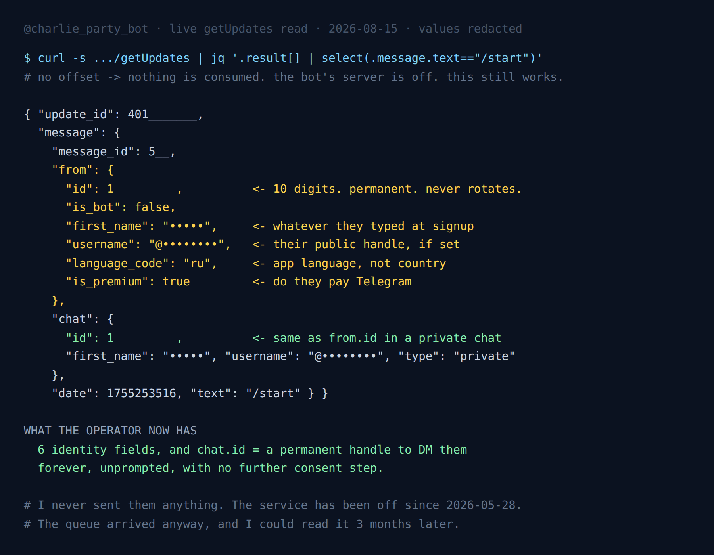

"Anonymous" Telegram Bots Still See Your @Username
Earlier this summer I pressed Start on eleven anonymous-message bots to find out how many still worked. Four replied. That post answers a practical question, which of these things is alive, and it is the most-read thing on this site.
It also asks the wrong question about privacy.
"Anonymous" in this category means anonymous to the person receiving your message. Your friend gets a confession with no name attached. That is the product, and it works. But there is a third party in every one of these conversations, and nobody writes about them: the person running the bot. Last night I went and looked at exactly what that person receives.
I did not have to guess, because I run a bot too.
The read
I switched my party-game bot off on 28 May. The service is stopped and disabled; there is no process listening. Telegram keeps queueing updates for it anyway, and you can read that queue without a server, which is a thing I wrote about separately after finding twenty-two unread messages in it.
So on 15 August I called getUpdates again, with no offset, which means nothing is consumed and the record survives for the next reader. Two strangers had pressed Start in the window. Here is one of them, with the values redacted and the field names left exactly as Telegram sent them.

/start from my switched-off bot's queue, 15 August 2026. Field names untouched, values redacted.Six identity fields, delivered the instant someone taps a button that says Start.
id, a ten-digit integer. This is the important one and I will come back to it.is_bot, false, obviously.first_name, whatever they typed when they made the account.username, their public @handle, if they have set one.language_code, the language their Telegram app is set to. Not their country, and worth not over-reading, but it is a signal.is_premium, whether they pay Telegram money.
Then chat.id, which in a private chat is the same number as from.id. That is not a detail. That number is a working address. Any time in the future, the operator can sendMessage to it and the message lands in that person's Telegram, with no further permission step and nothing the recipient agreed to beyond having once pressed Start.
I did not send anything. My bot's server has been off for three months. The data arrived regardless and was still sitting there for me to read.
The field that actually matters
first_name is often junk. username is frequently unset. language_code is coarse. Any single one of them is weak.
id is not weak, and the reason is that it is the same number everywhere. Telegram gives each account one permanent user ID. It does not rotate, it is not per-bot, and it is not scoped in any way. The ten digits that arrived in my queue are the same ten digits that arrive at every other bot that person has ever pressed Start on.
That is the part with teeth. One bot operator learns very little about you. But the ID is a join key, and if the same person, or the same group of people, or anyone who buys a dumped database, runs several bots in the same niche, those separate little piles of nothing merge into one profile: this account uses an anonymous-confessions bot, a dating bot, and two crypto-signal bots, is a Premium subscriber, and reads Telegram in Russian.
Nobody has to breach anything for that to happen. It is the documented behaviour of the API, working correctly. Telegram's own Bot API documentation describes the User object plainly; the fields are not hidden and were never meant to be. And Telegram's privacy policy is explicit that bots are third-party developers, and that what you send them is governed by that developer rather than by Telegram.
So the honest framing of an anonymous-message bot is this. Anonymous to the recipient, fully identified to the operator, and correlatable across every other bot that operator runs.
Want a group game that answers, and does not want your handle?
Our party game runs as a Telegram Mini App, so there is no bot chat to start and no queue collecting your details. Truth or Dare, Never Have I Ever, Would You Rather.
Open the free Mini App Not on Telegram right now? Play in your browser →Who is actually pressing Start
While I had the instrument out I kept reading. Three windows, three days:
- 13 August: 4 private
/start, languages en, en, en, ru - 14 August: 1, ru
- 15 August: 2, ru and ar
Seven people over three days, on a bot that has been switched off since May and answers nobody. Two caveats I want to state rather than bury. Telegram only retains updates for about 24 hours, so each of those is a one-day snapshot and the days before 13 August are gone permanently. And three readings are not a trend. The 4, then 1, then 2 swing is exactly the kind of noise that makes a single day's number worthless.
But the languages are the interesting part, and they line up with the payload story. Four of the seven were not English speakers. Every one of them was handed the same six fields, and none of them saw so much as an error message in return.
What you can actually do about it
Realistic list, in order of how much it buys you.
Remove your @username, or use bots from an account that has none. Of the six fields, this is the only one that is genuinely optional and genuinely identifying. A username is a public handle that ties the bot session to your presence in groups, to search, and to anywhere you have posted your @, including outside Telegram. first_name you can set to anything. id you cannot change. username you can simply not have, and it is the single biggest reduction available.
Understand that a second account is the only real reset. Since the ID is permanent and per-account, the only way to break the join key is a different account with a different number. That is a real answer, not a trick.
Do not expect Telegram's privacy settings to help here. The settings that control who sees your phone number, your last-seen time, or who can forward your messages govern your visibility to other users. They do not sit between you and a bot you deliberately started. Pressing Start is the consent, and it is all-or-nothing.
Judge the operator, since you cannot hide from them. Does the bot have a stated privacy policy? A named person or company behind it? A working support contact? For the eighteen game bots I messaged and the eleven anonymous ones, the bots that had gone silent were also, unsurprisingly, the ones with nobody home to ask. A bot that is abandoned is not a bot that deleted your data. Mine is proof: switched off in May, still collecting.
If you run one of these, the bar is low and most people miss it. Do not store from wholesale because it was convenient. You need the ID to route a reply. You almost never need first_name, username and is_premium in a database, and every one you keep is a liability with no upside. When I saved my own queue readings to disk I stripped IDs, usernames and names out of the stored copy. Not because anyone asked, but because there is no reason to hoard them, and the version of me in six months should not be able to look them up either.
Try it on your own bot
The whole check takes a minute and needs no server. Make a bot with BotFather if you do not have one, then press Start on it from your normal account and read what came back:
curl -s "https://api.telegram.org/bot<TOKEN>/getUpdates" \
| jq '.result[].message.from'Leave the offset out. With no offset the queue is not consumed, so you can run it repeatedly and it returns the same thing. I confirmed that by calling twice and getting an identical count both times. Pass an offset and you permanently discard everything below it, which is worth knowing before you experiment on a bot whose queue you care about.
Whatever prints is what every bot you have ever started already has.
A note on what is in the screenshot above: the field names are exactly as Telegram sent them, and every value is redacted. The people in my queue pressed Start on a game bot, not on a blog post, and republishing their IDs to make a point about hoarding IDs would be its own answer to the question.
The point
This is not a Telegram scandal and I am not going to dress it up as one. The API is documented, the behaviour is deliberate, and it is the same trade every platform makes when it lets third parties build things. Bots need to know who is talking to them or they cannot answer.
The gap is between that and the word "anonymous" sitting on the tin. People install these expecting the anonymity to be general when it is specifically, narrowly, anonymity from one direction, and the direction it does not cover is the one with a database.
Drop your @username. That is the practical takeaway and it costs you nothing.
FAQ
Can a Telegram bot see my phone number?
Not from a normal message. Phone numbers only reach a bot if you explicitly tap a "Share phone number" contact button, which is a separate, visible consent step. The six fields in a standard /start do not include it.
Can a bot see my real name if I have not set one?
It sees your first_name field, which is whatever text is on your Telegram account, real or not. It is not verified and it is not sourced from anywhere else.
Is my Telegram user ID different for each bot?
No. It is one permanent number per account, identical across every bot you interact with. That is what makes cross-bot correlation possible without any hacking.
Does deleting the chat with a bot delete my data on their side?
No. Deleting the chat clears your view of it. Anything the operator already stored on their own server is untouched, and there is no mechanism in the Bot API that tells them to remove it.
Are anonymous message bots safe to use?
Safe from the friend receiving your message, yes. That part works as advertised. Not anonymous from whoever runs the bot, who has your ID, handle and a permanent way to message you. Pick bots run by someone identifiable, and use them from an account with no @username.
Telegram Party Pack — 255 group-chat prompts
Truth or Dare, Never Have I Ever, Would You Rather, Most Likely To, Paranoia and Story Chain, written out so your game night does not depend on any bot at all.
Get the pack← More Telegram write-ups · Our bots · Best Telegram party games